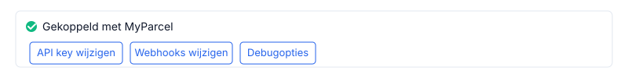
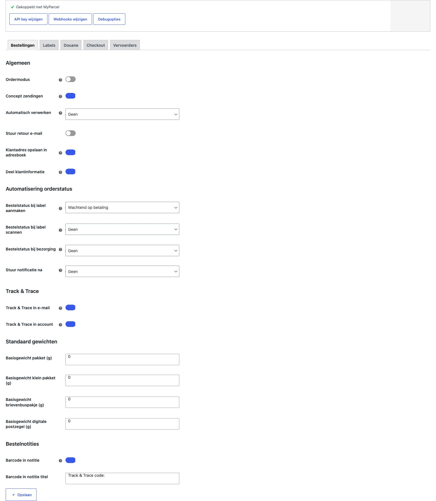
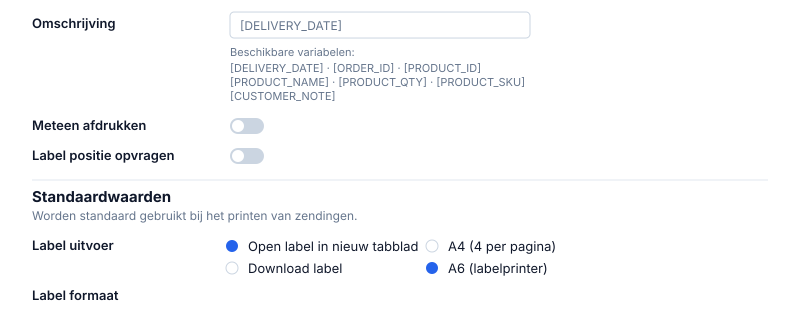
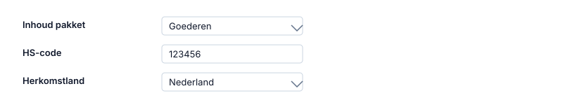
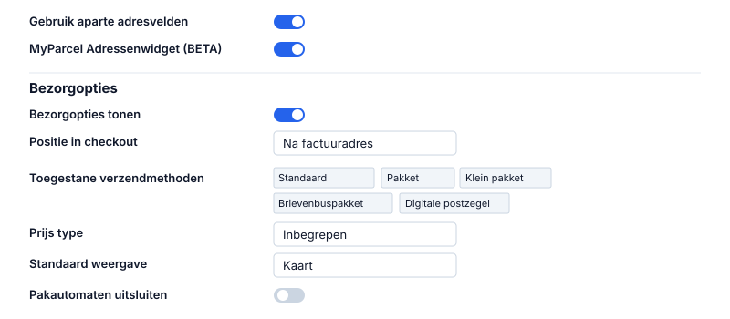
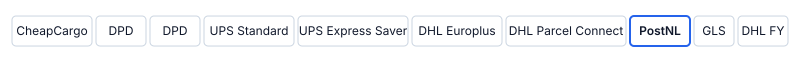
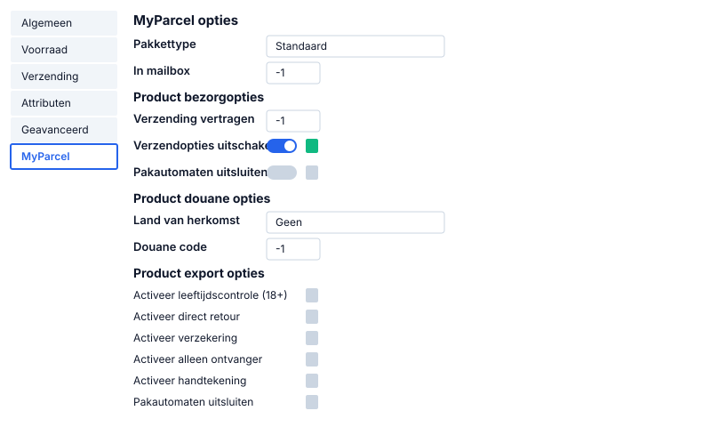
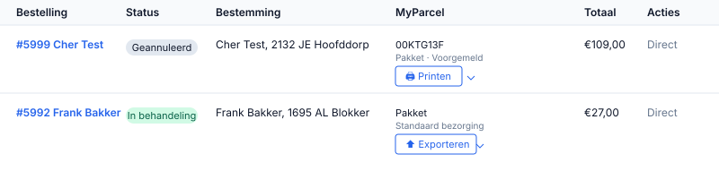
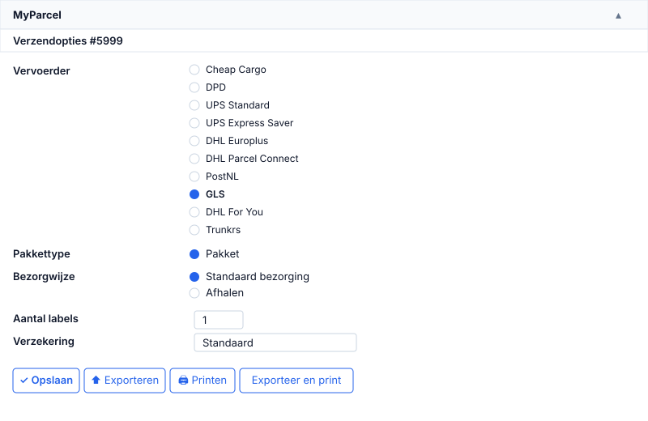
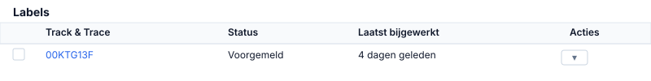

WooCommerce
Van nul naar verzonden pakket — deze gids loopt elke instelling in de MyParcel-plugin met je door, legt uit waarom je iets zou aanzetten, laat met afbeeldingen zien waar je moet klikken, en sluit af met een diagnose-checklist. Geen code nodig — alles gebeurt in je WordPress-admin en in je MyParcel-backoffice.
Voorbereiden in je MyParcel-account
Voordat je de plugin aanzet, regel je een paar dingen in je MyParcel-backoffice. Zo voorkom je dat je halverwege moet wisselen.
- Account aanmaken. Meld je (gratis) aan via myparcel.nl/register.
- Factuuradres en retouradres instellen in Shopinstellingen → Algemeen — dit adres komt op al je labels.
- Vervoerders activeren in Shopinstellingen → Vervoerders. Alleen aangevinkte vervoerders verschijnen in de plugin.
- API key genereren onder Shopinstellingen → Integratie. Deze heb je in stap 2 nodig.
- Orderinformatie importeren (optioneel) — aanzetten als je de Ordermodus in de plugin wilt gebruiken.
1 · Plugin installeren
- In WordPress-admin naar Plugins → Nieuwe plugin.
- Zoek op MyParcel.
- Klik bij WooCommerce MyParcel op Nu installeren, daarna op Activeren.
- Er verschijnt een nieuw menu-item WooCommerce → MyParcel.
Liever handmatig? Download de release-ZIP via github.com/myparcelnl/woocommerce/releases en upload via Plugins → Nieuwe plugin → Plugin uploaden.
2 · Account koppelen (API key)
Open WooCommerce → MyParcel. Bovenaan zie je drie knoppen — API key wijzigen, Webhooks wijzigen en Debugopties — plus de status-badge.

API key plakken
- Klik op API key wijzigen.
- Plak de key uit je MyParcel-backoffice (Shopinstellingen → Integratie).
- Klik op Opslaan — binnen enkele seconden verschijnt Gekoppeld met MyParcel ✓.
Werkt het niet? Meest voorkomende oorzaken:
- Niet op Opslaan geklikt.
- Spatie meegekopieerd vóór of na de key.
- Key van een andere shop gebruikt — elk MyParcel-shop heeft zijn eigen key.
- Plugin en MyParcel-shop op verschillende omgevingen (live vs sandbox).
3 · Overzicht van de plugin
De plugin voegt vier nieuwe plekken toe aan je WordPress-admin:
| Waar? | Wat kun je er? |
|---|---|
| WooCommerce → MyParcel | De settingspagina met alle tabbladen (Bestellingen, Labels, Douane, Checkout, Vervoerders). |
| WooCommerce → Bestellingen | Extra kolom “MyParcel” per order + bulk-acties voor exporteren & printen. |
| Order-detailpagina | Een MyParcel-box waarin je per order vervoerder, pakkettype en verzekering instelt en labels aanmaakt. |
| Product-detailpagina | Een MyParcel-tab in Productgegevens waar je per product pakkettype, douane-codes en export-opties vastlegt. |
4 · Settings · Bestellingen
De eerste en belangrijkste tab. Hier bepaal je hoe orders door je shop stromen.

Algemeen
- Ordermodus — aan: volledige order (incl. klantdata, productregels, notities) naar MyParcel. Uit: alleen een label. Aanbevolen: aan, mits Orderinformatie importeren in je MyParcel-account ook aan staat.
- Concept zendingen — aan: zending blijft concept in MyParcel, je kunt nog wijzigen. Uit: direct aanmelden bij de vervoerder. Aanbevolen: aan tijdens inrichten, uit als alles stabiel draait.
- Automatisch verwerken — welke WooCommerce-status triggert automatische export? Geen, Wachtend op betaling, In behandeling, Afgerond, enz. Begin met Geen.
- Stuur retour e-mail — stuurt klant automatisch een retourlink na export. Aanbevolen bij mode/schoenen.
- Klantadres opslaan in adresboek — bewaart adressen in je MyParcel-adresboek.
- Deel klantinformatie — deelt e-mail en telefoonnummer met MyParcel. Nodig voor Track & Trace-mails van MyParcel zelf en verplicht voor internationale bezorging.
Automatisering orderstatus
Laat de WooCommerce-orderstatus automatisch meelopen met het verzendproces:
- Bestelstatus bij label aanmaken — typisch In behandeling.
- Bestelstatus bij label scannen — typisch Afgerond.
- Bestelstatus bij bezorging — bij Afgerond als je dat nog niet eerder deed.
- Stuur notificatie na — welke statusovergang een WooCommerce-mail triggert.
Track & Trace
- Track & Trace in e-mail — link in de WooCommerce order-bevestiging.
- Track & Trace in account — link op Mijn account.
Standaard gewichten
Elk pakkettype heeft een leeg-gewicht. MyParcel telt dit op bij het productgewicht.
| Pakkettype | Typisch leeg-gewicht |
|---|---|
| Pakket (bruine doos) | 200 – 400 g |
| Klein pakket | 100 – 200 g |
| Brievenbuspakje | 50 – 100 g |
| Digitale postzegel | 10 – 30 g |
Bestelnotities
- Barcode in notitie — Track & Trace-code als orderopmerking.
- Barcode in notitie titel — prefix vóór de code. Standaard:
Track & Trace code:.
5 · Settings · Labels
Alles wat te maken heeft met het etiket zelf — de tekst erop, het formaat en hoe je print.

Omschrijving op het label
Variabelen worden automatisch ingevuld bij het aanmaken van het label:
| Variabele | Wordt |
|---|---|
[DELIVERY_DATE] | Bezorgdatum |
[ORDER_ID] | WooCommerce-ordernummer |
[PRODUCT_ID] | Product-ID |
[PRODUCT_NAME] | Productnaam |
[PRODUCT_QTY] | Aantal |
[PRODUCT_SKU] | SKU |
[CUSTOMER_NOTE] | Opmerking van de klant |
Voorbeelden: Order [ORDER_ID] · [ORDER_ID] · [PRODUCT_QTY]× [PRODUCT_NAME]
Printgedrag
- Meteen afdrukken — toon PDF direct na export.
- Label positie opvragen — vraag telkens welke posities op een A4 je wilt gebruiken.
Standaardwaarden
- Label uitvoer — Open in nieuw tabblad (handmatig printen via browser) of Download label.
- Label formaat — A4 (4 per pagina) voor standaardprinter, A6 (labelprinter) voor Zebra/Brother.
6 · Settings · Douane
Verplicht bij zendingen buiten de EU (VK, Zwitserland, VS, Noorwegen, Canada…). Deze waarden komen op het CN22/CN23-formulier dat aan het label vastzit.

- Inhoud pakket — Goederen (standaard voor webshops), Documenten, Cadeau, Commercieel monster of Retourzending.
- HS-code — geharmoniseerde douanecode. Zoek op tarief.douane.nl. Voorbeelden:
6109.10(T-shirts),9503.00(speelgoed),3304.99(make-up). - Herkomstland — waar het product vandaan komt (niet waar je het opslaat).
7 · Settings · Checkout
Wat je klant ziet en kan kiezen bij het afrekenen.

Adresvelden
- Gebruik aparte adresvelden — splitst Straat in Straat + Huisnummer + Toevoeging. Aanbevolen aan — voorkomt onbestelbare pakketten.
- MyParcel Adressenwidget (BETA) — autocomplete op NL-postcode + huisnummer, vult plaats + straat automatisch in.
Bezorgopties
- Bezorgopties tonen — master-schakelaar.
- Bezorgopties tonen voor backorders — ook tonen bij niet-op-voorraad producten.
- Positie in checkout — Na factuuradres, Na verzendadres, of Na orderopmerking.
- Toegestane verzendmethoden — koppel elke WooCommerce-verzendmethode aan Standaard, Pakket, Klein pakket, Brievenbuspakket, Digitale postzegel of Ongefrankeerd. Elke methode aan één pakkettype.
- Prijs type — Inbegrepen (totaalprijs) of Meerkosten (alleen het verschil).
- Bezorgopties titel — kop boven de widget.
- Custom CSS — eigen styling.
Afhaalpunten
- Standaard weergave — Kaart of Lijst.
- Gebruikers kunnen wisselen tussen lijst en kaart.
- Pakautomaten uitsluiten — verberg onbemande automaten.
- Gesloten dagen — dagen waarop je niet verzendt.
8 · Settings · Vervoerders
Per vervoerder een eigen sub-tab. Welke verschijnen hangt af van wat je op je MyParcel-account hebt geactiveerd.

Alle vervoerder-tabs hebben dezelfde opbouw. Hieronder loop ik PostNL als voorbeeld door; DHL For You, DHL Parcel Connect, DPD, UPS, GLS en Trunkrs werken identiek (met elk hun eigen specifieke opties).
Standaard export instellingen
- Activeer leeftijdscontrole (18+) — verplicht voor alcohol/tabak.
- Activeer handtekening — bezorger laat tekenen.
- Activeer alleen ontvanger — geen buren.
- Activeer direct retour — ongeleverd direct terug naar jou.
- Activeer groter dan 100 × 70 × 58 cm — grote pakketten (toeslag).
- Activeer tracked / Activeer ontvangstcode — extra trackingopties.
Verzekering
- Activeer verzekering — master-toggle.
- Verzekeren vanaf (€) — drempel waarboven automatisch verzekerd.
- Verzekeren tot — maximumdekking NL.
- Verzekeren tot (EU) / (EU + Rest Wereld).
- Verzekeren voor percentage — bijv. 100% van orderwaarde.
Bezorgopties
Opties voor thuisbezorging
- Thuisbezorging inschakelen — master-toggle.
- Bezorgdagen venster — 1 t/m 14 dagen vooruit.
- Verwerkingstijd — hoeveel werkdagen je nodig hebt.
- Sluitingstijd — per dag instelbaar (ma t/m zo).
- Verzendmogelijkheden — per dag aanvinken of je verzendt.
Bezorgmomenten
- Standaard bezorging + Standaard bezorgprijs.
- Ochtendbezorging + Prijs ochtendbezorging.
- Avondbezorging + Prijs avondbezorging.
- Maandagbezorging + Prijs maandagbezorging.
Verzendopties
- Alleen ontvanger + toeslag.
- Handtekening + toeslag.
- Prio (24 uur) toestaan + toeslag — expresbezorging.
Opties voor afhaallocaties
- Afhaallocaties inschakelen.
- Prijs afhalen — positief = toeslag, negatief = korting.
9 · MyParcel-instellingen op productniveau
Op elk product staat een extra tabblad MyParcel onder Productgegevens. Hier kun je de globale instellingen uit Vervoerders en Douane per product overschrijven. Elk veld heeft een 🔒 slot-icoon; klik het om de globale waarde los te koppelen en een product-specifieke waarde in te stellen.

MyParcel opties
- Pakkettype — overschrijft het standaard pakkettype voor dit product (Standaard, Pakket, Klein pakket, Brievenbuspakje, Digitale postzegel of Ongefrankeerd).
- In mailbox — hoeveel van dit product er (samen) in één brievenbuspakje passen. Waarde
-1= niet-mailbox. Voorbeeld: verkoop je stickers waarvan er 50 in een brievenbuspakje passen? Zet50. Bestelt een klant 51 stuks, dan gaat de order automatisch als Pakket.
Product bezorgopties
- Verzending vertragen — extra werkdagen voordat dit product uit de deur kan. Handig voor made-to-order, speciale voorraad uit een extern magazijn, enz. Vul het aantal dagen in.
- Verzendopties uitschakelen — verbergt de hele MyParcel-bezorgoptie-widget bij het afrekenen als dit product in het mandje zit. Nuttig voor bijv. virtuele producten of cadeaubonnen.
- Pakautomaten uitsluiten — verbergt DHL/PostNL-pakautomaten als afhaalpunt voor dit product. Nuttig voor producten die niet door een pakautomaat-loket passen.
Product douane opties
- Land van herkomst — specifieker dan de globale waarde. Bijvoorbeeld: globaal Nederland maar dit specifieke dropship-product komt uit China.
- Douane code (HS-code) — product-specifieke HS-code. Voorbeeld: globaal
6109.10(T-shirts), maar voor je nieuwe handschoenen-collectie6116.99.
Product export opties (alle met slot-override)
- Activeer leeftijdscontrole (18+) — altijd 18+ check voor dit product (bijv. alcohol).
- Activeer direct retour — ongeleverd direct retour.
- Activeer verzekering — dit product altijd verzekeren.
- Activeer groter dan 100 × 70 × 58 cm of zwaarder dan 23 kg — voor oversized-zendingen.
- Activeer alleen ontvanger.
- Activeer handtekening.
- Activeer Prio (24 uur).
- Activeer tracked / Activeer ontvangstcode.
- Vers bezorgen / Bevroren bezorgen — voor food-shops.
10 · De bestellingenlijst
Op WooCommerce → Bestellingen voegt de plugin een kolom MyParcel toe en bulk-acties. Per order zie je in één oogopslag of het al aangemaakt is en welke status het heeft.

Bulkacties
Vink orders aan en kies in de Bulkacties-dropdown een van de MyParcel-opties:
- MyParcel: Exporteren — maakt de zendingen aan bij MyParcel (concept of direct, afhankelijk van je instellingen).
- MyParcel: Exporteren & Printen — als hierboven, plus meteen een gecombineerd PDF met alle labels.
Zo verwerk je 50 orders in één handeling. Voor shops met 20+ orders per dag is dit de aanbevolen workflow.
11 · De order-detailpagina
Op de detailpagina van een individuele order verschijnt een MyParcel-box waarin je álle verzendopties voor die ene order kunt fijnregelen.

Wat staat er in de box?
- Vervoerder — radio met alle beschikbare vervoerders op je account. MyParcel kiest automatisch de meest geschikte maar je kunt per order overriden.
- Pakkettype — overschrijven voor deze order (bijv. toch een brievenbuspakje voor een kleine bestelling).
- Bezorgwijze — Standaard bezorging of Afhalen bij een afhaalpunt.
- Aantal labels — splits je een grote bestelling over meerdere pakketten? Zet hier bijv.
2of3. - Verzekering — override de globale verzekeringsregels voor deze specifieke order.
- Zaterdagbezorging / Handtekening vereist — toggles met slot; aan te passen per order.
De vier actieknoppen
- Opslaan — bewaart de instellingen zonder de zending nog aan te melden. Gebruik dit om eerst rustig de opties te doorlopen.
- Exporteren — meldt de zending aan bij MyParcel. Er wordt een barcode gegenereerd.
- Printen — print het label van een al geëxporteerde zending.
- Exporteer en print — alles in één klik: aanmelden én PDF downloaden.
De Labels-tabel onderaan de box
Zodra een order is geëxporteerd, verschijnt onder de knoppen een tabel met alle labels van die order:

12 · Dagelijks gebruik — orders verwerken
Workflow 1 — per order
- Open WooCommerce → Bestellingen en klik een order.
- Onderaan: MyParcel-box → kies vervoerder, pakkettype, enz.
- Klik Exporteer en print.
- PDF wordt geopend/gedownload — plak het label op de doos.
Workflow 2 — in bulk (aanbevolen bij 10+ orders/dag)
- Op de orderlijst, vink de orders aan die je wilt verzenden.
- Kies Bulkacties → MyParcel: Exporteren & Printen.
- Klik Toepassen. Eén gecombineerd PDF met alle labels wordt gedownload.
13 · Retouren
Drie manieren, van meest naar minst geautomatiseerd:
- Automatische retour-mail — zet in Bestellingen → Algemeen → Stuur retour e-mail aan. Bij elke export ontvangt klant een retour-link.
- Handmatig retour-label — in de MyParcel-box op de order, kies Retour genereren. Stuur het label zelf naar de klant.
- Retour-portaal — zet in je MyParcel-backoffice aan. Klant gaat naar een URL, vult ordernummer in, krijgt meteen een label.
14 · Veelvoorkomende scenario's
Kleine webshop, paar orders per dag
- Ordermodus: aan · Automatisch verwerken: Geen.
- A4 met 4 labels per vel — geen printer-aanschaf.
- Alleen PostNL, Thuisbezorging + afhaalpunten aan.
- Verzekering: vanaf €250, tot €500.
Drukke shop, 50+ orders/dag
- Ordermodus: aan · Concept zendingen: uit · Automatisch verwerken: In behandeling.
- A6 via Zebra-labelprinter, Meteen afdrukken: aan.
- Bulk-export 2–3× per dag. Verwerkingstijd 2 in piekperiodes.
- PostNL + DHL For You aanbieden.
Alleen brievenbuspakketten (koffie, kaarten)
- Maak in WooCommerce → Verzending → Verzendklasses een klasse
Brievenbus. - Koppel alle producten aan deze klasse.
- Onder Checkout → Toegestane verzendmethoden koppel je de methode alleen aan Brievenbuspakket.
- Bezorgopties uit zetten — bij brievenbus geen keuze.
Dure sieraden
- Standaard handtekening + alleen ontvanger aan.
- Verzekering: vanaf €0, tot €2500, percentage 100%.
- Avondbezorging + afhaalpunten uitzetten.
- Aparte adresvelden + Adressenwidget voor minimale typfouten.
Internationaal verzenden
- Deel klantinformatie aan (telefoon vereist).
- Douane-tab volledig invullen: HS-code, herkomstland, inhoud = Goederen.
- DHL Parcel Connect voor Europa, UPS/DHL Express voor wereldwijd.
15 · Diagnose-checklist
Loop deze stappen in volgorde af vóór je support inschakelt. Drie op de vier issues zijn binnen 5 minuten op te lossen.
Algemene check
- Plugin geactiveerd? (Plugins → Geïnstalleerde plugins)
- Bovenaan WooCommerce → MyParcel zie je Gekoppeld met MyParcel ✓?
- WooCommerce 7.0+ en PHP 8.1+? (WooCommerce → Status)
- Andere verzend-/checkout-plugins tijdelijk deactiveren om conflicten uit te sluiten.
- Cache geleegd? (Server, LiteSpeed/Redis én browser.)
Widget verschijnt niet op checkout
- Checkout → Bezorgopties tonen aan?
- Elke verzendmethode gekoppeld aan een pakkettype?
- Standaard shortcode-checkout gebruikt (
[woocommerce_checkout])? - JS-error in browser-console? (F12 → Console)
Labels worden niet aangemaakt
- Gekoppeld-badge nog groen?
- Order heeft een verzend- + klantadres?
- Verzendmethode aanwezig? (Lokaal afhalen triggert geen MyParcel-actie.)
- Product-gewicht ingevuld? (Producten → Product → Verzending)
- Foutmelding bij de zending in de MyParcel-backoffice?
Track & trace komt niet in de e-mail
- Bestellingen → Track & Trace → Track & Trace in e-mail aan?
- Order al geëxporteerd? Zonder barcode geen link.
- E-mail verstuurd? (WooCommerce → Status → Logs)
- Staat 'ie in spam van de klant?
Adres verkeerd op het label
- Zet Gebruik aparte adresvelden aan.
- Gebruik de MyParcel Adressenwidget voor NL.
- Het label toont het Verzendadres, niet het factuuradres.
Alles wordt Pakket, nooit Brievenbus
- Check Checkout → Toegestane verzendmethoden: brievenbus-methode mag niet óók onder Pakket staan.
- Eén verzendmethode = één pakkettype.
- Gebruik verzendklasses om product-eigenschappen aan pakkettypes te koppelen.
16 · Veelgestelde vragen
Kost de plugin geld?
Nee. Je betaalt alleen voor de zendingen via MyParcel.
Kan ik twee MyParcel-accounts aan één WooCommerce-shop koppelen?
Niet uit de doos. Eén API key per shop. Werk je met twee merken? Draai twee aparte WooCommerce-shops.
Hoe verander ik mijn afzenderadres op het label?
Dat staat in je MyParcel-backoffice (Shopinstellingen → Algemeen → Adresgegevens), niet in de plugin. Wijzigingen zijn direct actief.
Welke statussen gebruik ik voor Automatisch verwerken?
Gebruik je Mollie/iDEAL? Orders gaan direct naar In behandeling. Overboeking en handmatige verwerking? Afgerond.
Kan ik meer dan 4 labels per A4 printen?
Nee — A4 is altijd 4 per pagina. Overweeg een A6-labelprinter bij 20+ orders/dag.
Werkt het met Afterpay/Klarna?
Ja — MyParcel is los van je betaalprovider.
Mijn klant kiest een afhaalpunt, hoe zie ik dat op het label?
Het afhaalpunt wordt automatisch als ontvangstadres meegestuurd naar MyParcel.
Avondbezorging is niet zichtbaar voor bepaalde adressen.
Adresafhankelijk — bepaald door de vervoerder, niet de plugin.
Ik zie dubbele DPD-tabs.
Geen bug — MyParcel onderscheidt twee DPD-contracten. Zet alleen je actieve contract aan.
Kan ik pakketten laten ophalen door de vervoerder?
Ja — onder Vervoerders → <carrier> → Activeer pakket laten ophalen door vervoerder.
Plugin-update gedaan en nu werkt iets niet meer.
Rol terug via WP Rollback of de GitHub-release. Meld de bug op github.com/myparcelnl/woocommerce/issues.
Bronnen & support
- github.com/myparcelnl/woocommerce ↗ — broncode, releases, issues.
- wordpress.org/plugins/woocommerce-myparcel ↗ — plugin-listing.
- backoffice.myparcel.nl ↗ — account, API key, facturatie.
- Contact MyParcel support